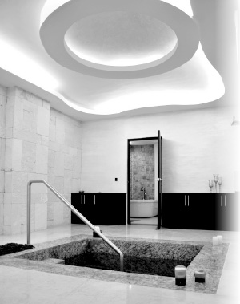

Key Players in Playa’s Jewish Revival
Mrs. Leah Brod, shlucha in Playa del Carmen, talks about life on shlichus.

It all began twenty-six years ago in the religious city of Beitar Ilit. A girl was born to the Offen family, their third child. Both parents are educators and the house is always open. From a very young age she loved to go on mivtzaim. In high school she coordinated activities for the Matteh Binyamin Chabad house run by R’ Refael Solomon. “That is where I got my professional training for shlichus,” she says.
In seminary in Tzfas, R’ Chitrik constantly preached shlichus. Leah began working in the Beis Chana dorm in Tzfas, one year as a madricha and the following year as a coordinator. She really enjoyed the educational aspect of her work and was certain she would continue in that direction. In all the meetings she had with her husband before their marriage they spoke about shlichus as one of their joint goals. “We knew that this is what we wanted. We said that wherever the Rebbe put us, that is where we would go.” And the Rebbe put them in Playa del Carmen three and a half years ago.
SMALL BUT LIVELY
“The area we work in is near the beach. On one side there are gorgeous beaches and on the other side is the jungle. Our city is comprised of a folksy population. People are relaxed, warm, and happy. Cancun, a popular tourist spot, is nearby but it’s more Americanized. Today, more and more people prefer the more natural and original simplicity of Playa, and so its popularity is growing from year to year.
“It is a coastal city which is always warm. In the winter, American and European tourists come in droves to escape the cold. It’s a city with action, parties and entertainment, and every Israeli who goes to Central America ends or begins his tour here, staying in the area for two weeks to a month. The city is very colorful. In the past it was a small Mexican fishing village but in recent years it has rapidly turned into one of the most developed cities in the world. This is why, sometimes, the Chabad house here can look like a train station …
“It is a central city from which people leave for destinations all over the area. People are constantly coming and going. Even the Jews who stay here for a while are very hard to ‘catch.’ This is because the city is busy with noisy parties, so people’s heads are in a different place. The place isn’t at all calm despite the magnificent scenery and the stunning beaches. So sometimes it can be very hard to get people to listen to you, to focus. They are in pursuit of other things.”
The local community in Playa is also quite colorful, a sort of “ingathering of exiles.” The Jews come from all over the world and speak all languages. There are no locally born Jews; they’ve all come in recent years. Since everything revolves around tourism, even those who live here aren’t really steady. The residents of the city can be divided into two groups: tourists and those who provide services for them.
The Chabad house target audience can be divided into three groups. The families of local people, consisting of Israelis, Mexicans, Americans, French, and Russians, comprise the first group. They include wealthy owners of hotels, teachers and even plumbers. The Israelis are mostly young people trying their luck in business for a year, two or three.
The second and main group is comprised of Israeli tourists who come all year, according to seasons. There are couples coming on their honeymoon and tourists spending half a year in South America and ending in Playa. Most of them tour Central America, and Playa is a destination they don’t want to miss. Older people also come since it’s close to the US and young people come to have fun.
The final group consists of Jewish tourists from the world over, the US, Europe, Argentina and Brazil. They come in the winter on vacation. There are even Jews from Mexico City where there is a large Jewish community, who come to Playa to relax for short periods of time. The existence of a Chabad house, a mikva and a shul are reasons for them to pick this location so that they can vacation while having their spiritual and material needs easily met. They greatly appreciate what the shluchim do and help by sending equipment, Machzorim, etc. Over here, far from home, they see how necessary the work of shlichus is and they are happy and surprised to discover the Chabad house.
THE WORK GOES ON AND ON AND…
“The Chabad house is like a lighthouse. You just put up a sign and those in need come on their own. It is amazing to see how people are inspired when there is a small point of light. We really see a major change in the city. When we first came, three and a half years ago, there was nothing Jewish here at all. When we chose this location, we were told that there are hardly any Jews and the few that are here, aren’t interested. Today we see how the city is waking up to Judaism.”
The Brods try to reach every Jew in every situation, starting with little children for whom there is a preschool in the shlucha’s home. They provide Jewish schooling for the older ones on Sunday or in the afternoon; programs before holidays; bar and bas mitzva programs, and camps during the winter and summer.
“When talking numbers, the children are the smallest group we work with, but – as the Rebbe says – the impact on a small child is very powerful, so we try to invest a lot in this area.”
Mivtza Kashrus is flourishing through a full range of kosher services. There is a restaurant that is open throughout the week, with a wonderful team of bachurim who take care of the many tourists who come by, materially and spiritually.
“We really feel that if you exert a little effort and add light, the light continues and a local Jew will open a kosher store and other Jews want their restaurants to become kosher. Today, the Chabad house supervises the kashrus of outside businesses.”
The community enjoys Jewish programming. R’ Brod gives shiurim to individuals or to small groups in accordance with their level of knowledge and language. The bachurim go on Mivtza T’fillin every day, and on Fridays they distribute Shabbos kits and challos. Kits and candle lighting times are given out before Rosh HaShana, as are menorahs for Chanukah, mishloach manos for Purim, and matzos for Pesach. The Chabad house is the place to buy all one’s Judaica needs including t’fillin and mezuzos.
A side bonus is in the relationships that are fostered within the community because of their outreach. Jews who did not believe there are other Jews in the city, discovered brothers and became friends. Aside from the public outreach, the shluchim also make house calls and develop personal ties with families.
There is even a “N’shei Chabad,” a group of women who get together every Rosh Chodesh. It is organized by the women who enjoy being involved. With Hashem’s help and many brachos from the Rebbe, a beautiful mikva was just inaugurated which certainly encourages the observance of this important mitzva.
Activities are done with the many tourists who visit Playa. This is completely different than working with those who are there more permanently. This isn’t long-term work, consisting of slow, consistent input. Over here, people stop by for a day or two to a month. In this short period of time, the Brods try as much as possible to connect them to the Rebbe and Judaism and to arouse their G-dly spark.
The highlight of their work is the Shabbos and Yom Tov meals. Tourists know about this, which is why these are their busiest times. Hundreds of tourists sit together and sing and remain to farbreng into the night.
“There are times that the Shabbos tables are very colorful and exciting because there are people from all over the world. During certain seasons, dozens of Jewish tourists come from all over. They come mainly in the winter, when it’s cold in the US and Europe and it’s nice here. It is amazing to see them all sitting together at the meal with the mix of languages and styles, but everyone happy. Am Yisroel Chai.
“Last Shabbos, a few dozen of us from Eretz Yisroel, Mexico, Miami, Chicago, and Czechoslovakia were sitting together. Our Jewishness and our sitting together at the Shabbos table uniting us, spoke louder than words. Many tourists are astounded by the caring they see here in the heart of every Jew, even in someone who looks far from anything Jewish. Many girls, who had no connection to religion, are exposed to a new world. Shabbos is the time to sit and talk, to listen and to get acquainted.
“Every Motzaei Shabbos, dozens of tourists sit and write to the Rebbe and till today, I am in touch with some of them. This week, two girls from kibbutzim came who described themselves as ‘not knowing anything.’ The truth is that even after three and a half years on shlichus and meeting hundreds of people, I was taken aback by their abysmal lack of knowledge. At Havdala, they looked in astonishment at the ceremony and asked many questions about it.”
In the work with tourists there is also the less savory aspect:
“Unfortunately, many tourists get entangled with the law. It often happens that my husband is called at all hours to go and extricate tourists who ended up in jail due to a lack in communication, language, or knowledge of the mentality of the place. We also provide aid to sick tourists. The Chabad house is the tourists’ home away from home and concerned parents know we are here and call to find out about lost children or children who did not call home in a long time. My husband knows that in most cases, the fact that the children are incommunicado is because of where they are located or inattention, nothing worse. The Chabad house serves as an embassy. The Israeli embassy contacts us for every problem and situation that requires help.”
A visit to the Chabad house, even if it starts with a technical question or problem, often inspires the Jew to put on t’fillin and to make a good hachlata. The questions about the Rebbe and Moshiach open up a discussion and many people sit down and write to him. On Wednesdays there is a special program for tourists. The shliach and the men go to the Brod house for a barbecue and farbrengen while the women stay at the Chabad house with the shlucha for a workshop on hafrashas challa. This usually turns into a farbrengen about the Jewish woman and her special mitzvos.
The connection with the tourists continues even when they return home. This is something that all the Chabad houses in Central America work on together since they deal with the same tourists. In Eretz Yisroel there are Shabbatons, seminars for men and women, connecting them with Chabad houses in Eretz Yisroel, and more.
There are hardly any Mexicans among the people the Brods work with, as they work primarily with Israelis and with local people who are not Mexican. However, I still wanted some Mexican flavor for the article. Leah told me that sometimes she prepares Mexican food for special community evenings.
She also told me that she learned something to apply to her avodas Hashem:
“I adopted a positive aspect of the Mexican mentality. Everything here is very relaxed. Manana, which means ‘tomorrow’ in Spanish, is the operative word here. Nothing is urgent. Even if there is an eight-nine hour wait in line, nobody is stressed. Sometimes, this attitude interferes with the shlichus when some service is needed right away, but for the most part, Mexico teaches us to be more patient.”
CHALLENGES
It all sounds so laid-back but I soon discover that the Brod family has some real challenges to deal with.
“Until recently, there was no mikva and the only option was to immerse in the sea. A year ago, salvation came with a mikva on the nearby island of Cozumel (whose shluchim have helped us tremendously from the day we opened), but we did not suffice with that. Boruch Hashem, at the beginning of 5774 we inaugurated a new mikva in Playa!”
As for kashrus, they feel that they are relatively better equipped than other distant places of shlichus, because in Mexico there is a big Jewish community and many hechsherim. They are in touch with rabbanim with expertise in kashrus and they know what they can and cannot buy. Many products are kosher and are available in all the stores. But not everything; there are no dairy products for now. And since the meat is not Lubavitcher sh’chita, they shecht chickens. There is no beef, but as a coastal city there is plenty of fish and they have all the basic food items. There is no nosh for the children; now and then, some nosh arrives in the food deliveries.
“Now we are working on a kosher supermarket and occasionally, Bissli, Bamba, and chocolate are imported.” (When I think of the huge amount of candy and nosh that our kids are swamped with, I think that it might be worth going on shlichus just to get them weaned off it all – MK.)
Leah points out the hardest part of her shlichus, the chinuch of her children. She works as a preschool teacher for her three children and for a few other children in the community.
“Lately, my daughter and son (three and four years old) began saying that they want to go to first grade because then, according to a video they watched, they will be in a classroom with many children. With Hashem’s help with Moshiach in Yerushalayim! In the meantime, their main socializing is done with tourists, and that too is not always easy because they can become attached to a certain tourist who is with us for a long time, and then she suddenly leaves.”
I wonder out loud when the shluchim have any privacy. Leah says their private home is separate from the Chabad house and they moved to a spacious home where the preschool is. They go to the Chabad house in the afternoon and the work is clearly divided between times they are home and times they are out.
“It is something you learn as time goes on, that you need to provide privacy and time for the children and the home. When you respect this, other people automatically respect it too.
“On Shabbos we are at the Chabad house. And since the outreach here is year round and intensive, every Shabbos we host between 100-250 people. It’s not always easy … We love it, but sometimes, once in a while, you wish for a Shabbos alone, but it hardly ever happens.”
The taavos of shluchim …
When we spoke about cooking in large quantities, Leah said modestly that she is always improving and apologized, “After all, I came as a young married woman without much experience. I love the kitchen and experimenting with different recipes. Day to day life doesn’t always allow for it, but before Yomim Tovim and for programs for women, I need to prepare something fancy because the community loves it. That is the time to make new things, to experiment and learn. Today it is completely different than in the beginning. I learned a lot from the community and friends.”
THE ULTIMATE PRIVILEGE
What does the shlichus provide for you? I ask. And I am surprised by the answer.
“Just this Shabbos, some tourists were sitting in the Chabad house and each one spoke about the trip that they’re taking or that they took. One bemoaned the fact that she hadn’t traveled enough. Then I was asked where I have been, whether I traveled at all. I laughed and said I barely know my own area but my traveling is of another sort, not of locations but of life, of people.
“Shlichus provides you with the privilege of belonging to the Rebbe even if you are not at all on that level, even if you don’t deserve it. Shlichus has empowered me in so many ways and lets me see miracles on a daily basis. Although the Rebbe says we need to live natural, normal lives, even the natural things on shlichus are miraculous. It is an incredible privilege to be a shlucha.
“As a young, newly married couple, we were briefly on shlichus in Bolivia in order to help out for Purim-Pesach. I will never forget the time when the shliach there, R’ Yotam Klein, took us shopping, which is not a simple thing in Bolivia, and told us, ‘You should know that to be a shliach of Moshiach is the highest level one can achieve in creation.’ That line stuck with me. There are hardships and sometimes you think of leaving and living a normal life in a warm Chabad community. But this line is engraved in me, to have the privilege of being on the highest level in creation, not in your merit but because you are the shliach of Moshiach!
“I see my children, how they live. It is a different level and an altogether better way of being raised. They can be lacking things, they are not growing up in a normal environment, but I see how with the naturalness of a child they accept everyone and love and enjoy experiencing life on shlichus.
“Sometimes, when I worry about the children, and my conscience bothers me about doing something at their expense and I wonder whether they will love shlichus or, G-d forbid, hate it, I take a step back. I look at them and ask myself, with everything they lack and have, are they happy? Boruch Hashem, I see that they are happy, that they are an inseparable part of the Chabad house. Once, Chaya Mushka noticed a tourist putting a camera down on the Shabbos table and she said: Put it away, Shabbos! The children can also innocently say: You need a skirt, or you need a shawl. And when they say it, people accept it.”
Leah has an optimistic perspective. She doesn’t hesitate to break with convention and insists that shluchim don’t need to suffer. “I sometimes hear what sounds like competition among shluchim about who has it hardest. The Rebbe constantly says that shlichus is for the material good of the shliach! The Rebbe doesn’t want a shliach to suffer. You need to do what it takes not to be in such a situation. When you are aware that shlichus is also for your material welfare, your perspective changes.”
IGROS KODESH STORIES
“At every opportunity, we try to convince people to write to the Rebbe through the Igros Kodesh. Men and women write to the Rebbe and special stories abound. A tourist told me recently that her friend had been in 770 and wrote to the Rebbe. She did not understand the answer but remembered the date of the letter. After a while she was expecting a baby and she gave birth on the date that appeared in the answer.
“Once, on Motzaei Simchas Torah, three girls sat down to write to the Rebbe. One of them did not understand how the answer she received was pertinent to her. The Rebbe had written to a young man, saying he had already spoken to him before the Yomim Tovim and why was he still not married, and he should not postpone it and should marry as soon as possible.
“Suddenly, she got it. She said she knew a guy for five years already and was very uncertain about whether to marry him. She was taking a break and was traveling with friends. Now that their trip was ending, she had to make a decision. The Rebbe referred there to a problem with parents and wrote to act as was proper and then ‘as waters reflect a face’ would be fulfilled. She said that indeed, one of her concerns was her relationship with his mother. The Rebbe had given her clear instructions.
“There was a young man who wanted to ‘try’ the Igros Kodesh and he asked whether to travel or not. When he looked at the page he opened to, he said he didn’t understand it and hurried on his way. However, my husband sent along a copy of the letter for him to look at on the way. He called later on and said, ‘I asked whether I should continue traveling or not, but that was merely a superficial question. I was really amazed by the answer. I am very nervous and feeling stressed and my purpose in traveling was to find some peace of mind and to free myself of the constant pressure I find myself in. I am constantly bothered by the question – how do I extricate myself from this? The Rebbe’s answer was to someone who suffered from nervous problems! The Rebbe told him to learn Tanya.’
“The young man went to the next Chabad house he came across and immediately began learning and implementing the instruction he received.”
DO AND YOU SHALL RECEIVE
We know that publicizing miracles hastens the Geula. Leah says, “Since most of the time we live miracles, it is hard to tell stories. There are endless stories … The Rebbe wants us to operate naturally, but in the end there are always miracles. Every step at the Chabad house is a miracle. I don’t think there is a Chabad house in the world that operates normally. Chabad house is synonymous with miracle! Every shliach who jumps into the sea of shlichus is a miracle. Someone in the community came and said we need to first become professional and official before we open up. My husband said, ‘If I waited to be professional, I would not be here today and the Chabad house would not have opened.’
“The Chabad house is a miracle within nature but sometimes there are outright miracles. I’ll give you an example. One of the serious problems here is being able to pay the electric bill which is very high. One time we did not have the money to pay it and we had no choice but to borrow money. In my experience, I saw that the Rebbe wants work. It makes no difference in what way; you make a vessel for the bracha and the money will come somehow.
“That day, someone who lives here in Playa came here. He is someone who comes once a year … you mainly go to him. Anyway, he came and gave me an envelope. It contained precisely the amount of the electric bill which was not a round number! The Rebbe basically told us, ‘I am with you all the time.’
“We had many financial problems with our first Pesach here. Erev Yom Tov, after nearly everything was ready and I was going to set up the hall, a significant purchase was still missing: the disposable paper goods for hundreds of people. It needed to be bought and paid for and there was no money for it.
“My husband sat down to write to the Rebbe and opened to a letter addressed to R’ Chaim HaLevi Binyamini. My husband’s name is Chaim Binyamin – HaLevi. The letter contained wishes for freedom from all challenges and disturbances, and brachos for a kosher and happy Pesach. Right afterward, three quarters of an hour before Yom Tov, someone came with $1000 cash. We immediately sent bachurim to buy all the disposables we needed. A thousand dollars from heaven.
“The mikva is a miracle. A local Jew, who is a tremendous help, bought land for a mikva. However, at a certain point, the plans were set aside. Then, in the end, he kept his word and built a beautiful mikva, taking care of every detail from the foundation to the trimmings. The mikva is on the highest level of physical and halachic beauty.
“The preschool is another miracle disguised in nature. As I mentioned, the Rebbe wants us to work and then the miracle follows. When I decided to open a preschool, I had money problems and so I arranged a group of ‘women on behalf of the preschool.’ I spoke to women in Mexico City and New York and I met with people, but nothing moved.
“A certain wealthy woman from Mexico City kept dodging me for half a year. Once in a while I called her with a request for help, but she ended up referring me to her sister. It turned out her sister is a preschool teacher in an elite school which replaces its equipment every year. They donate the previously used equipment to non-Jewish preschools that need it. Since I’ve contacted the sister, she sends me deliveries of expensive items: indoor and outdoor play equipment, chairs, tables, games to develop the mind. This is all aside from material and technical help in how to become an officially recognized school. It seemed as though I spent half a year wasting time, but then a channel opened up and endless blessing began pouring through.
“The fact that there is a preschool brings children to the city, because their parents know that there is Jewish education to be had. I have seen that when making a natural vessel, the blessings come forth. The school is my project and I hope to continue developing it.”
GET OUT THERE!
I asked Leah for suggestions for shluchos who are starting out. She was happy to oblige.
“You have to constantly see who your target audience is and understand what they need. Sometimes, people work without adapting to the community and then they don’t understand why they are not successful. You need to see what the locals are doing. What is the special character of the place? This is how you figure out how to operate. There are communities where people love crowds; there are others where they don’t like big gatherings and you don’t understand why. There are people who don’t like to leave home and greatly appreciate those who go to them. You have to constantly keep your finger on the pulse.”
As to how to relate to the people with whom you come in contact, Leah recommends another two things. “It is important to include people; they love to take part. Also, you can’t take people’s comments personally. You are above that. You are here for them. If you did something that was the right thing, it doesn’t matter what they say.
“Also, I’ve seen women who seem so distant, so disconnected and then they suddenly show an interest in tahara. There is no one who is not connected on some level. You have to reach people at the point where they are connected to Hashem and when you bolster this area, the G-dly soul will exert its influence in other areas.”
Often, we don’t know the results of our work, noted Leah. She illustrated this point with the following story:
“Dudi Caplan and Shlomi Peleg who run the Chabad house on Cozumel, said they have a good relationship with a Jew who lives there, but the man is willing to talk about anything but Judaism. One day, he went to the Chabad house and announced that in the summer, his family who lives in New York would be coming. His children would be in the Chabad house day camp and he made this request, “Explain to my six year old daughter how to light the Shabbos candles.’
“The shluchim were surprised and asked what happened, considering that up until then they were not permitted to say a word about Judaism. The man said that recently he had a business meeting in Playa and he was waiting in a mall. In the meantime, he looked at the Israeli girls behind the Dead Sea products displays, and saw how they interacted with customers. Then, to his surprise, he saw one of them pause, bend under her display, take out two candles and put them on her stand, light them, and say the bracha. He was flabbergasted.
“Shabbos entered in the middle of a workday and the girl paused to light the candles and say the bracha! He decided that he wanted his daughter to be the same way. Since then, every week he calls her to remind her to light. We go around every Friday and distribute candles to Israeli workers and it was amazing to hear how a candle in Playa had an effect on a little girl in New York. Interestingly, that same week the Israeli girl left. She doesn’t even know the significance and power of what she did.”
KEEPING AN EYE ON THE GOAL
Leah wants to emphasize that we cannot forget the goal:
“We must constantly think – what does the Rebbe want and why am I on shlichus. It is possible to get swept up with the day’s activities and in the desire to accomplish a lot, forget what it’s all about. I must constantly ask myself: Why am I here? This leads me to the next topic, the goal.
“The gateway to all aspects of shlichus is kabbalas p’nei Moshiach.” As Leah puts it, “The topic is well known around the world and we just need to be prepared to answer questions that come up due to lack of knowledge. Most of them accept what you have to say and are very interested. Moshiach comes up for discussion every Shabbos. The fact that we have a picture of the Rebbe, a Yechi sign and we proclaim Yechi after davening, lets people know what we believe. We make it comfortable to ask questions and for a discussion to develop. When you present things clearly and are confident, people accept it. Even people who are ostensibly very distant from Judaism accept what you have to say.
“There is a former kibbutznik here. When we first got to know the family, none of them even knew what t’fillin are! The wife said to me, ‘We learned in Eretz Yisroel that the holidays are agricultural celebrations and here I am relearning what they’re about.’ It’s amazing to see how learning changes one’s whole outlook. One day she said, ‘I looked on Facebook at my friends from the kibbutz and they wrote that they found alukot (leeches) in their field and at first I thought they meant Elokut and I wondered what that is doing in their field! Then I got it …’
“Her story reminded me how Chassidus describes a situation where the first perception is Elokus – Elokus as obvious and worlds as a novelty. By the way, that woman has experienced an incredible change in perspective. For example, one day she saw in someone’s phone book that my husband’s name was written as “Rebbi Chaim” and she complained to me, ‘How do they not realize that there is a difference between Rebbi/Rebbe and Rabbi?’”
I asked Leah for a message for our readers and she stated emphatically, “Go on shlichus! Everyone can be a shliach. The main thing is to take action. I am often unsure, not knowing what is appropriate, but you simply have to decide that you are going to do something. Then think exactly what you are going to do.
“Boruch Hashem, the Rebbe has given us little people the privilege of being luminaries in this city for, as I said, our abilities and strength are limited. But we see on shlichus that even without doing a lot, the Rebbe makes us lighthouses and light attracts light. We have the privilege of being light and we try to do what we can. As my husband always says when we talk about ‘success in shlichus;’ success in shlichus is not a nice wish, it’s Geula. As long as we don’t have the Geula, the shlichus is lacking! So may we merit the Geula already and no longer need to be here, not us and not the other Chabad shluchim in the world, for we will all merit to join the Rebbe MH”M, the meshaleiach now!”
***
Boruch Hashem, there is a lot to be done and right now we are looking for a big building for our work. The expenses are high and so, whoever is interested in being partner in this work can contact us: [email protected]
Yechi Adoneinu Moreinu V’Rabbeinu Melech HaMoshiach L’olam Va’ed
Beis Moshiach (staff). "Key Players in Playa’s Jewish Revival." Beis Moshiach, no. 918 (March 4, 2014).